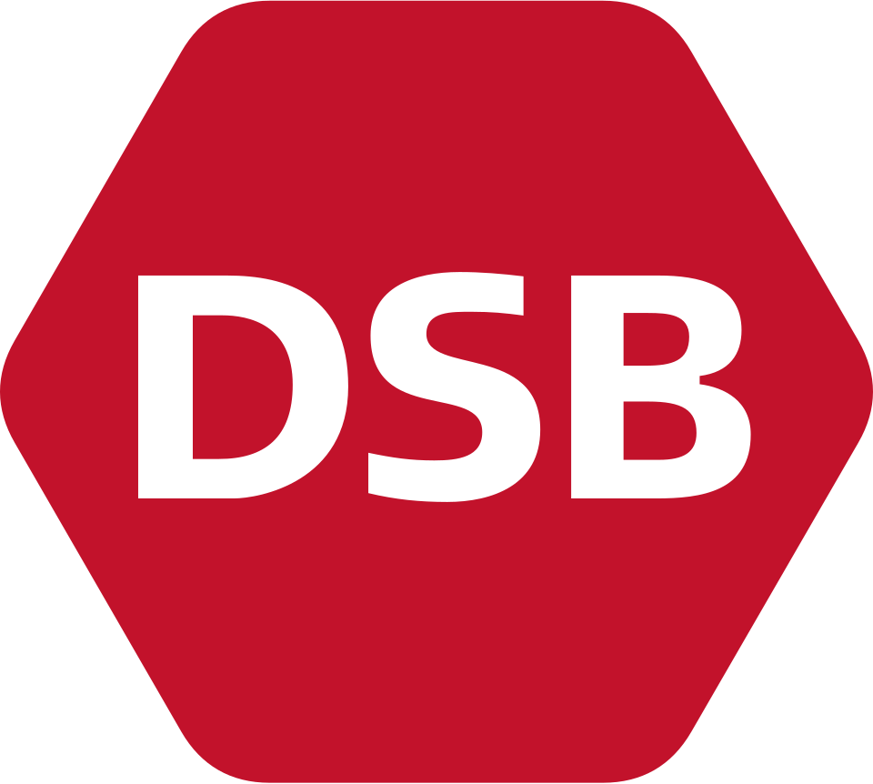
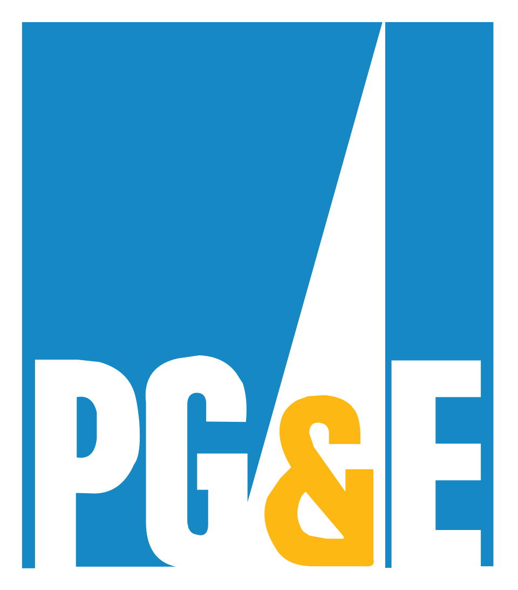
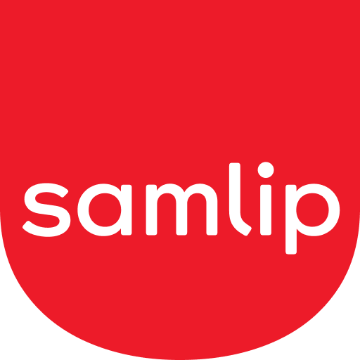
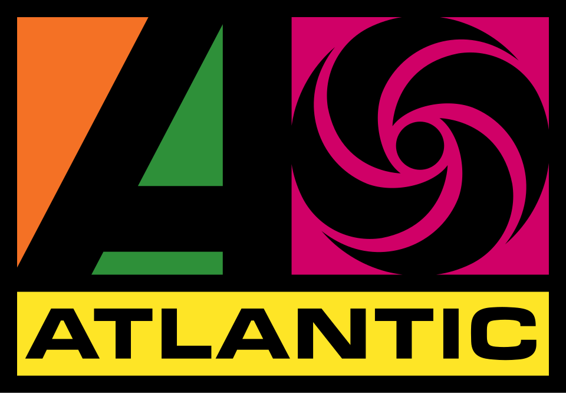
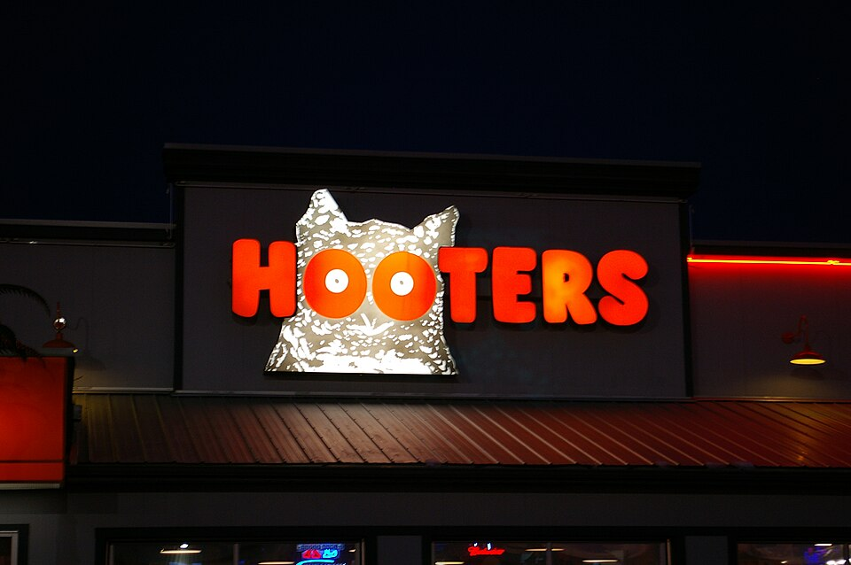
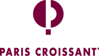
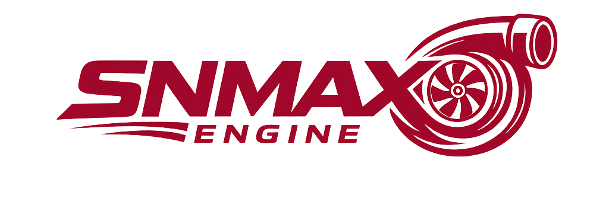
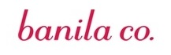
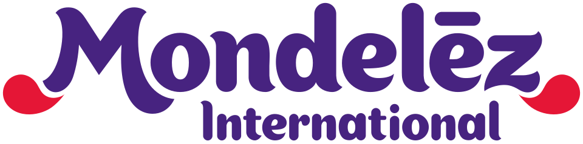

10월에 태어난 브랜드 120곳
10월에 태어난 브랜드 120곳을 탄생일 순으로 모았습니다. 인스타그램(Instagram), British Broadcasting Corporation, IMDb가 모두 10월생입니다.
2026년 10월, 주년을 맞는 브랜드
- 640주년
 하이델베르크 대학교(Heidelberg University)1386년 10월 18일 탄생
하이델베르크 대학교(Heidelberg University)1386년 10월 18일 탄생 - 175주년로이터(Reuters)1851년 10월 탄생
- 130주년
 호프만 라 로슈(Hoffmann-La Roche)1896년 10월 1일 탄생
호프만 라 로슈(Hoffmann-La Roche)1896년 10월 1일 탄생 - 120주년
 개닛(USA Today Co.)1906년 10월 6일 탄생
개닛(USA Today Co.)1906년 10월 6일 탄생 - 75주년
 한국조폐공사(Korea Minting and Security Printing Corporation)1951년 10월 1일 탄생
한국조폐공사(Korea Minting and Security Printing Corporation)1951년 10월 1일 탄생 - 70주년
 성심당(Sungsimdang)1956년 10월 15일 탄생
성심당(Sungsimdang)1956년 10월 15일 탄생 - 60주년
 포니 캐년(Pony Canyon)1966년 10월 1일 탄생
포니 캐년(Pony Canyon)1966년 10월 1일 탄생 - 50주년
 삼우종합건축사사무소(SAMOOCM Architects & Engineers)1976년 10월 탄생
삼우종합건축사사무소(SAMOOCM Architects & Engineers)1976년 10월 탄생
10월 탄생 달력
날짜까지 확인된 93곳을 날짜 칸에 놓았습니다.
- 1지멘스DSB+19
- 2티켓마스터로지텍+4
- 3해태제과페트로브라스
- 4후터스
- 5단스케 은행국제자연보전연맹+3
- 6개닛위니아+4
- 7KLMIM뱅크+3
- 8콘티넨탈 AG메리어트 인터내셔널+4
- 9현대카드
- 10Pacific Gas and Electric Company오포+1
- 11한글과컴퓨터
- 12올림푸스드림웍스 픽처스
- 13깃랩
- 14오아시스마켓
- 15베를린 훔볼트 대학교국립중앙도서관+3
- 16월트 디즈니 컴퍼니월트 디즈니 픽처스
- 17파리크라상IMDb+1
- 18하이델베르크 대학교British Broadcasting Corporation+1
- 19블록버스터깃허브
- 20동진쎄미켐CRH+2
- 21
- 22인앤아웃 버거풍산+4
- 23
- 24
- 25빅판도라TV
- 26
- 27코네
- 28메이시스SPC삼립+1
- 29
- 30
- 31프록터 앤드 갬블
10월생 브랜드 연대순
- 하이델베르크 대학교(Heidelberg University)독일 · 브랜드·비즈니스
- 베를린 훔볼트 대학교(Humboldt-Universität zu Berlin)독일 · 브랜드·비즈니스
 프록터 앤드 갬블(Procter & Gamble)미국 · 홈·라이프스타일
프록터 앤드 갬블(Procter & Gamble)미국 · 홈·라이프스타일 지멘스(SIEMENS)독일 · 기술·전자
지멘스(SIEMENS)독일 · 기술·전자- 로이터(Reuters)영국 · 미디어·엔터테인먼트
 메이시스(Macy's)미국 · 리테일·커머스
메이시스(Macy's)미국 · 리테일·커머스- 단스케 은행(Danske Bank)덴마크 · 금융
 콘티넨탈 AG(Continental AG)독일 · 모빌리티
콘티넨탈 AG(Continental AG)독일 · 모빌리티
DSB덴마크 · 모빌리티 Banco de Chile칠레 · 금융
Banco de Chile칠레 · 금융- 호프만 라 로슈(Hoffmann-La Roche)스위스 · 헬스·제약
 VF Corporation미국 · 스포츠·아웃도어
VF Corporation미국 · 스포츠·아웃도어
Pacific Gas and Electric Company미국 · 에너지·산업재- 개닛(USA Today Co.)미국 · 미디어·엔터테인먼트
 코네(Kone)핀란드 · 에너지·산업재
코네(Kone)핀란드 · 에너지·산업재- 조선호텔앤리조트(Josun Hotels & Resorts)한국 · 여행·호스피탈리티
 KLM네덜란드 · 기술·전자
KLM네덜란드 · 기술·전자- 올림푸스(Olympus)일본 · 기술·전자
 British Broadcasting Corporation영국 · 미디어·엔터테인먼트
British Broadcasting Corporation영국 · 미디어·엔터테인먼트 월트 디즈니 컴퍼니(The Walt Disney Company)미국 · 미디어·엔터테인먼트
월트 디즈니 컴퍼니(The Walt Disney Company)미국 · 미디어·엔터테인먼트 월트 디즈니 픽처스(Walt Disney Pictures)미국 · 미디어·엔터테인먼트
월트 디즈니 픽처스(Walt Disney Pictures)미국 · 미디어·엔터테인먼트 해태제과(Haitai Confectionery)한국 · 식음료
해태제과(Haitai Confectionery)한국 · 식음료 국립중앙도서관(National Library of Korea)한국 · 미디어·엔터테인먼트
국립중앙도서관(National Library of Korea)한국 · 미디어·엔터테인먼트 빅(BIC)프랑스 · 홈·라이프스타일
빅(BIC)프랑스 · 홈·라이프스타일
SPC삼립(SPC Samlip)한국 · 식음료
애틀랜틱 레코드(Atlantic Records)미국 · 미디어·엔터테인먼트 국제자연보전연맹(International Union for Conservation of Nature)스위스 · 브랜드·비즈니스
국제자연보전연맹(International Union for Conservation of Nature)스위스 · 브랜드·비즈니스 인앤아웃 버거(In-N-Out Burger)미국 · 식음료
인앤아웃 버거(In-N-Out Burger)미국 · 식음료 도에이(Toei Company)일본 · 미디어·엔터테인먼트
도에이(Toei Company)일본 · 미디어·엔터테인먼트- 한국조폐공사(Korea Minting and Security Printing Corporation)한국 · 금융
 한화그룹(Hanwha Group)한국 · 브랜드·비즈니스
한화그룹(Hanwha Group)한국 · 브랜드·비즈니스 페트로브라스(Petrobras)브라질 · 에너지·산업재
페트로브라스(Petrobras)브라질 · 에너지·산업재- 중중국건설은행(China Construction Bank)중국 · 금융
- 성심당(Sungsimdang)한국 · 식음료
 LG전자(LG Electronics)한국 · 기술·전자
LG전자(LG Electronics)한국 · 기술·전자- 포니 캐년(Pony Canyon)일본 · 미디어·엔터테인먼트
 캡제미니(Capgemini)프랑스 · 기술·전자
캡제미니(Capgemini)프랑스 · 기술·전자 GC녹십자(GC Biopharma)한국 · 헬스·제약
GC녹십자(GC Biopharma)한국 · 헬스·제약- IIM뱅크(iM Bank)한국 · 금융
- 동진쎄미켐(Dongjin Semichem)한국 · 기술·전자
 동국제약(Dong-Kook Pharmaceutical)한국 · 헬스·제약
동국제약(Dong-Kook Pharmaceutical)한국 · 헬스·제약 풍산(Poongsan)한국 · 에너지·산업재
풍산(Poongsan)한국 · 에너지·산업재 CRH미국 · 에너지·산업재
CRH미국 · 에너지·산업재 월트 디즈니 월드 리조트(Walt Disney World Resort)미국 · 여행·호스피탈리티
월트 디즈니 월드 리조트(Walt Disney World Resort)미국 · 여행·호스피탈리티 TSR미국 · 미디어·엔터테인먼트
TSR미국 · 미디어·엔터테인먼트- 삼우종합건축사사무소(SAMOOCM Architects & Engineers)한국 · 브랜드·비즈니스
 티켓마스터(Ticketmaster)미디어·엔터테인먼트
티켓마스터(Ticketmaster)미디어·엔터테인먼트- 쌍용건설(Ssangyong Engineering and Construction)한국 · 브랜드·비즈니스
 마이크론 테크놀로지(Micron Technology)미국 · 기술·전자
마이크론 테크놀로지(Micron Technology)미국 · 기술·전자 게펜 레코드(Geffen Records)미국 · 미디어·엔터테인먼트
게펜 레코드(Geffen Records)미국 · 미디어·엔터테인먼트 로지텍(Logitech)스위스 · 기술·전자
로지텍(Logitech)스위스 · 기술·전자 인터플레이 엔터테인먼트(Interplay Entertainment)미국 · 미디어·엔터테인먼트
인터플레이 엔터테인먼트(Interplay Entertainment)미국 · 미디어·엔터테인먼트
후터스(Hooters)미국 · 식음료 AT&T미국 · 기술·전자
AT&T미국 · 기술·전자 버라이즌 커뮤니케이션스(Verizon)미국 · 기술·전자
버라이즌 커뮤니케이션스(Verizon)미국 · 기술·전자 파파존스(Papa John's)미국 · 식음료
파파존스(Papa John's)미국 · 식음료 블록버스터(Blockbuster LLC)미국 · 미디어·엔터테인먼트
블록버스터(Blockbuster LLC)미국 · 미디어·엔터테인먼트 오피스 디포(Office Depot)미국 · 리테일·커머스
오피스 디포(Office Depot)미국 · 리테일·커머스
파리크라상(Paris Croissant)한국 · 식음료 리얼텍(Realtek)기술·전자
리얼텍(Realtek)기술·전자- 가민(Garmin Group)미국 · 기술·전자
- 하하이난 항공(Hainan Airlines)중국 · 모빌리티
- 한글과컴퓨터(Hancom)기술·전자
 IMDb영국 · 미디어·엔터테인먼트
IMDb영국 · 미디어·엔터테인먼트 DSP 미디어(DSP Media)미디어·엔터테인먼트
DSP 미디어(DSP Media)미디어·엔터테인먼트- 플플래닛 할리우드(Planet Hollywood)미국 · 식음료
 메리어트 인터내셔널(Marriott International)미국 · 여행·호스피탈리티
메리어트 인터내셔널(Marriott International)미국 · 여행·호스피탈리티- Host Hotels & Resorts미국 · 여행·호스피탈리티
 Mobile TeleSystems러시아 · 기술·전자
Mobile TeleSystems러시아 · 기술·전자 드림웍스 픽처스(DreamWorks)미국 · 미디어·엔터테인먼트
드림웍스 픽처스(DreamWorks)미국 · 미디어·엔터테인먼트
세영D&C(Softmax)한국 · 미디어·엔터테인먼트 임페리얼 브랜즈(Imperial Brands)영국 · 브랜드·비즈니스
임페리얼 브랜즈(Imperial Brands)영국 · 브랜드·비즈니스 폭스 뉴스(Fox News)미국 · 미디어·엔터테인먼트
폭스 뉴스(Fox News)미국 · 미디어·엔터테인먼트 키이스트(KeyEast)한국 · 미디어·엔터테인먼트
키이스트(KeyEast)한국 · 미디어·엔터테인먼트 익스피디아 그룹(Expedia Group)미국 · 여행·호스피탈리티
익스피디아 그룹(Expedia Group)미국 · 여행·호스피탈리티 스위스컴(Swisscom)스위스 · 기술·전자
스위스컴(Swisscom)스위스 · 기술·전자- Mitsui Chemicals일본 · 에너지·산업재
 한국항공우주산업(Korea Aerospace Industries)브랜드·비즈니스
한국항공우주산업(Korea Aerospace Industries)브랜드·비즈니스- 위니아(WINIA)한국 · 홈·라이프스타일
 위니아딤채(Winia Dimchae)홈·라이프스타일
위니아딤채(Winia Dimchae)홈·라이프스타일 어바이어(Avaya)미국 · 기술·전자
어바이어(Avaya)미국 · 기술·전자 엑셀론(Exelon)미국 · 에너지·산업재
엑셀론(Exelon)미국 · 에너지·산업재 현대카드(Hyundai Card)금융
현대카드(Hyundai Card)금융- 비지오(Vizio)미국 · 기술·전자
- 아름다운가게(Beautiful Store)패션·럭셔리
 Ubiquiti미국 · 기술·전자
Ubiquiti미국 · 기술·전자 울림엔터테인먼트(Woollim Entertainment)한국 · 미디어·엔터테인먼트
울림엔터테인먼트(Woollim Entertainment)한국 · 미디어·엔터테인먼트 아리스타 네트웍스(Arista Networks)미국 · 기술·전자
아리스타 네트웍스(Arista Networks)미국 · 기술·전자- 옐프(Yelp)미국 · 리테일·커머스
- 세가 사미 홀딩스(Sega Sammy Holdings)일본 · 미디어·엔터테인먼트
 오포(Oppo)기술·전자
오포(Oppo)기술·전자 The Mosaic Company미국 · 에너지·산업재
The Mosaic Company미국 · 에너지·산업재- 판도라TV(Pandora TV)한국 · 기술·전자

바닐라코(Banila Co.)한국 · 뷰티·퍼스널케어 미쓰비시UFJ파이낸셜 그룹(Mitsubishi UFJ Financial Group)일본 · 금융
미쓰비시UFJ파이낸셜 그룹(Mitsubishi UFJ Financial Group)일본 · 금융 이스타항공(Eastar Jet)한국 · 여행·호스피탈리티
이스타항공(Eastar Jet)한국 · 여행·호스피탈리티 에퀴노르(Equinor ASA)노르웨이 · 에너지·산업재
에퀴노르(Equinor ASA)노르웨이 · 에너지·산업재 깃허브(GitHub)미국 · 기술·전자
깃허브(GitHub)미국 · 기술·전자 쉬인(Shein)리테일·커머스
쉬인(Shein)리테일·커머스- 글글로벌파운드리(GlobalFoundries)미국 · 기술·전자
 TS 엔터테인먼트(TS Entertainment)미디어·엔터테인먼트
TS 엔터테인먼트(TS Entertainment)미디어·엔터테인먼트 구글 플레이(Google Play)기술·전자
구글 플레이(Google Play)기술·전자 Trade Desk미국 · 기술·전자
Trade Desk미국 · 기술·전자 Aptiv영국 · 모빌리티
Aptiv영국 · 모빌리티 Genius미국 · 미디어·엔터테인먼트
Genius미국 · 미디어·엔터테인먼트 인스타그램(Instagram)미국 · 미디어·엔터테인먼트
인스타그램(Instagram)미국 · 미디어·엔터테인먼트 CJ ENM Entertainment Division한국 · 미디어·엔터테인먼트
CJ ENM Entertainment Division한국 · 미디어·엔터테인먼트 깃랩(GitLab)미국 · 기술·전자
깃랩(GitLab)미국 · 기술·전자 오아시스마켓(Oasis Market)리테일·커머스
오아시스마켓(Oasis Market)리테일·커머스- 도어대시(DoorDash)미국 · 식음료
 크래프트 푸즈(Kraft Foods Group)미국 · 식음료
크래프트 푸즈(Kraft Foods Group)미국 · 식음료 일본제철(Nippon Steel Corporation)일본 · 에너지·산업재
일본제철(Nippon Steel Corporation)일본 · 에너지·산업재
몬덜리즈 인터내셔널(Mondelez International)미국 · 식음료- 애프터페이(Afterpay)호주 · 금융
- 카카도카와(Kadokawa Corporation)일본 · 미디어·엔터테인먼트
 에이피알(APR)한국 · 뷰티·퍼스널케어
에이피알(APR)한국 · 뷰티·퍼스널케어 알파벳(Alphabet Inc.)미국 · 기술·전자
알파벳(Alphabet Inc.)미국 · 기술·전자 업비트(UpBit)한국 · 금융
업비트(UpBit)한국 · 금융 Vici Properties미국 · 금융
Vici Properties미국 · 금융 SK온(SK On)한국 · 에너지·산업재
SK온(SK On)한국 · 에너지·산업재
10월에 태어난 것으로 확인된 브랜드는 120곳입니다. 가장 오래된 곳은 1386년의 하이델베르크 대학교(Heidelberg University), 가장 최근은 2021년의 SK온(SK On)입니다. 2026년 10월에는 하이델베르크 대학교(Heidelberg University)(640주년), 로이터(Reuters)(175주년), 호프만 라 로슈(Hoffmann-La Roche)(130주년) 등 16곳이 주년을 맞습니다. 생일이 같은 브랜드도 있습니다. 10월 1일에는 지멘스(SIEMENS)(1847)와 DSB(1885)와 호프만 라 로슈(Hoffmann-La Roche)(1896), 10월 8일에는 콘티넨탈 AG(Continental AG)(1871)와 메리어트 인터내셔널(Marriott International)(1993)와 Host Hotels & Resorts(1993)가 태어났습니다. 설립연도가 확인된 브랜드는 119개이며 가장 오래된 곳은 1810년, 가장 최근은 2021년에 시작했습니다. 시기별로는 1900년 이전 11개, 1900~1949년 16개, 1950~1999년 52개, 2000년 이후 40개입니다. 수록 자료로는 로고 이미지 114개, 로고 변천 자료 6개, 연혁 타임라인 16개를 갖췄습니다. 이 가운데 105개는 공식 웹사이트가 일치하는 위키데이터 개체로 연결해 두었습니다. 날짜는 위키데이터, 위키백과 정보상자, 브랜드 본문 가운데 같은 연월로 확인되는 값만 썼고, 출처끼리 다르면 싣지 않았습니다.